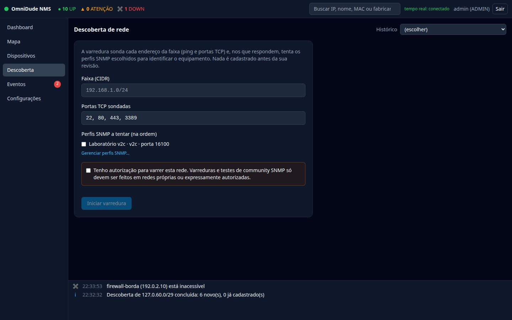
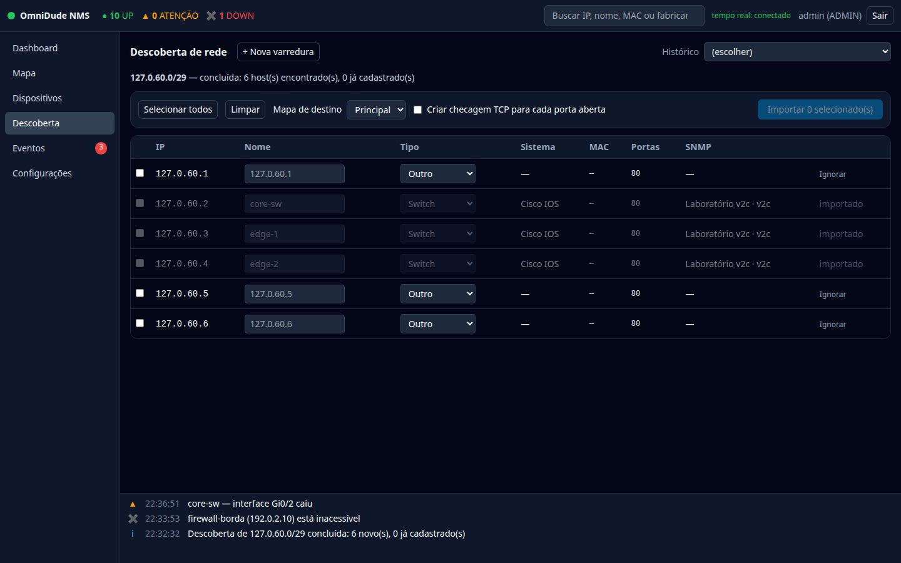

Como funciona#
A descoberta varre uma faixa de endereços e identifica os equipamentos que respondem. Nada é cadastrado antes da sua revisão.
Iniciar uma varredura#
- Abra Descoberta no menu.
- Informe a faixa (CIDR), por exemplo
192.168.1.0/24. - Ajuste as portas TCP sondadas (padrão:
22, 80, 443, 3389). - Marque, na ordem desejada, os perfis SNMP a tentar. Cada host que responde é consultado com o primeiro perfil que funcionar.
- Marque a confirmação de autorização e clique em Iniciar varredura.


A varredura mostra o progresso ao vivo e pode ser cancelada. Só roda um job por vez. O Histórico (canto superior direito) reabre varreduras anteriores.
Limites de segurança#
- Só redes privadas, loopback, link-local e CGNAT. Faixas públicas exigem
omnidude.discovery.allow-public=true. - Faixas com mais de 4.096 endereços pedem uma segunda confirmação; o teto absoluto é 65.536.
- A taxa é limitada (padrão: 128 sondas simultâneas e 200 hosts iniciados por segundo), para não sobrecarregar a rede.
- Hosts que já estão cadastrados não são sondados de novo.
A varredura envia pacotes a todos os endereços da faixa e testa a community SNMP escolhida. Só faça isso em redes próprias ou com autorização expressa; o formulário exige a confirmação por isso.
O que é consultado em cada host#
| Etapa | O que traz |
|---|---|
| Ping e portas TCP | Quem responde e quais serviços estão abertos. |
| SNMP | sysName, sysDescr, sysObjectID e, daí, o sistema e o tipo sugerido. |
| NetBIOS | Nome e grupo (típico de Windows e Samba). |
| SSDP/UPnP | Fabricante, modelo e tipo; roteadores respondem como InternetGatewayDevice. |
| mDNS | Nome .local de Apple, Linux e impressoras. |
| Fabricante do MAC | O prefixo do MAC (OUI) é consultado na tabela do IEEE. |
As consultas NetBIOS, SSDP e mDNS são unicast, feitas só nos hosts encontrados. O nome obtido vira o nome sugerido quando não há SNMP. Para desligá-las: omnidude.discovery.passive=false.
Fabricante pelo MAC#
O fabricante aparece na revisão, no inspetor e na lista de dispositivos, e a busca do cabeçalho também o encontra. Ele entra na identificação por regras: serve de palpite quando não há SNMP nem portas, e refina o que o SNMP não separa (um Linux de fabricante Ubiquiti é access point; de fabricante Synology, storage).
- O MAC só é conhecido para hosts na mesma rede local (tabela ARP do servidor) ou depois de Ler via SNMP. Atrás de um roteador, o host não tem fabricante.
- MAC aleatório (celulares) e virtual tem o bit “administrado localmente” ligado: a interface mostra MAC aleatório/virtual em vez de arriscar um fabricante.
Revisar e importar#
Ao terminar, a revisão lista cada host com IP, nome, tipo, sistema, MAC, portas abertas e perfil SNMP que funcionou.


- Nome e Tipo são editáveis antes de importar. Quando há identificação, o tipo já vem sugerido.
- Selecionar todos marca os hosts novos; Limpar desmarca.
- Mapa de destino escolhe em qual mapa os dispositivos entram.
- Criar checagem TCP para cada porta aberta cria um serviço por porta encontrada (além do Ping).
- Importar N selecionado(s) cadastra os dispositivos, com o perfil SNMP que funcionou, e, nos equipamentos SNMP, já lê as interfaces e propõe enlaces.
- Ignorar marca o host como ignorado: ele sai da lista de novos e não é importado.
Hosts que parecem já cadastrados#
Se um host tem o MAC (ou, como sugestão, o nome) de um dispositivo já cadastrado com outro IP, a revisão mostra “Parece ser X (cadastrado com Y)” e o botão Atualizar IP. Isso evita um duplicado quando o DHCP troca o endereço. “Selecionar todos” deixa esse host de fora, e importá-lo como novo exige marcá-lo de propósito. Veja Identidade e DHCP.
Personalizar a identificação#
A identificação por regras vem embutida. Para adaptá-la, crie arquivos no diretório de dados:
| Arquivo | Para que serve |
|---|---|
fingerprints.yml | Regras próprias de identificação (por sysObjectID, sysDescr, portas, vendor:…). As suas regras vêm antes das embutidas. |
mac-vendor.txt | Acrescenta ou corrige prefixos de MAC, sem recompilar. Uma linha por prefixo: <prefixo hex><TAB><fabricante>, de 1 a 12 dígitos. As suas linhas vencem as embutidas. |
As regras só por fabricante vêm depois de todas as outras e cobrem apenas fabricantes de tipo quase sempre único. As tabelas de fabricante embutidas são as do projeto arp-scan (ieee-oui.txt e mac-vendor.txt).
Limitações#
- Só IPv4. Não há traceroute (enlaces de camada 3 entre sub-redes) nem mDNS por multicast.
- O SNMP foi testado contra agentes simulados, não contra uma frota de equipamentos reais.
- Dispositivos fora da rede local do servidor não têm MAC e, portanto, não têm fabricante, a menos que um roteador SNMP forneça o ARP.